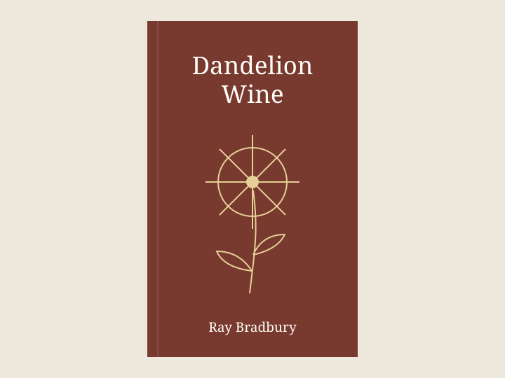

Dandelion Wine
Douglas starts keeping a record of everything that makes him feel alive: new shoes, the first dandelion harvest, and evenings on the porch. On a second reading, the summer adventures matter less to me than the adults trying to make peace with time. Bring a passage you understood differently when you reread it.